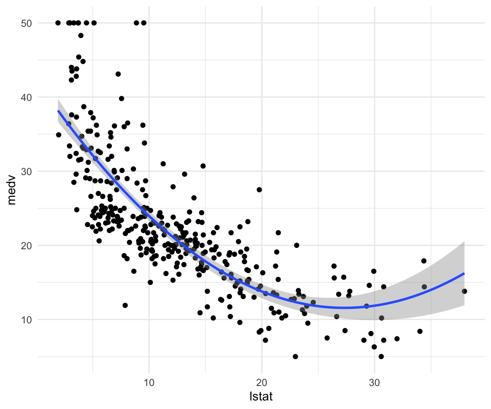
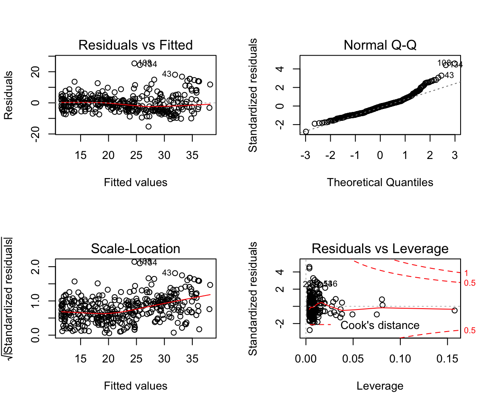

STA314F19
Michal Malyska
set.seed(1337)
library(tidyverse)
library(MASS)
library(ISLR)
# For working with factors
library(forcats)Preliminaries and R setup
Resources:
In case you have never worked with R up until this point, below is a guide to setting everything up. If you are ready, just use the navbar on the left to skip this and go to the first chapter - Visualizations. I would advise that you at least take a look at the packages I am using for this.
Downloading R and Rstudio.
Downloading important packages
Open Rstudio, and navigate to the console. Then run the following commands to get the packages I highly recommend you get:
install.packages(c(‘gridExtra’,‘tidyverse’,‘plotly’, ‘GGally’))
You might need to replace the quotation marks if you copypaste this.
This will install all the packages we should need for the class and beyond. Whenever you want to add a package you can either call the command:
install.packages(<quoted package name>)
or navigate to the Files and plots pane in Rstudio, click on packages, then install, and type in the name.
Note that you only need to do this once, and the packages will remain for any R script you are writing.
Learning
There is a number of resources available for you to learn and master the tidyverse package, which is what you will be using if you ever work with R. It’s technically not required for the course but it will make your life a lot easier.
Learn R with tidyverse - this on it’s own should give you good enough background to handle most of the coding you will ever do in R, both in class, and in a professional setting.
Advanced R with tidyverse - far beyond the scope of what’s needed for the course, but a great resource if you want to get involved with R.
Cheatsheets - very useful set of cheatsheets that you should probably keep open whenever you are working with tidyverse. (Especially the visiualization one)
GGPlot Flipbook - The best resource to get familiar with the slightly unintuitive syntax of ggplot.
Some other packages you should consider looking into, that will come handy during this class:
“car” - it is “the package” for regression models.
“summarytools” - contains function “dfSummary” which is the fastest way to get meaningful first glance at the data. It’s a good compromise between the ease of using “summary” or “glance”, and providing as much information as possible.
“forcats” - package for working with factors in r, part of the tidyverse family but not included in the tidyverse itself.
Just to cover all bases below I will show you the simple workflow that I follow when working with a new dataset, like you will be doing during this class.
RStudio Setup and settings
If this is your first time using RStudio, you should adjust your settings:
Navigate to Tools -> Global Options
Change “Save workspace to .RData on exit” to Never
Uncheck “Restore .RData into workspace at startup”
This is what mine look like:

Now, every time you want to start working on something, you should begin by creating an Rproject. This helps you keep track of the files, sets your working directory so that data loading is easier, and you should do it almost always.
Now that we have all that out of the way let’s start with what to do once you have RStudio open and ready to work.
File Setup
Since you will need to create pdfs from your code with figures and equations you will be using the knitr package and will be working in .Rmd files. This is the most common way to write anything in R that isn’t pure code. Make sure you have some distribution of LaTeX downloaded as it is necessary to create the pdfs. I recommend MikTeX, but it shouldn’t matter which one you have for this course.
When you create a new .Rmd file you will notice that at the top it will have a header containing the file title, your name and date. If you want to add a table of contents (which is created from headers) just change the output line to look like this:

To actually work with pdf creation you will need to download a LaTeX distribution. Navigate to this link, and download the appropriate one (MacTeX for Macs and MikTeX for Windows).
After you are done restart your R.
How to work in R without pain
Projects
Each time you work on a new “thing” whether it be a course, or research, I recommend you set up a project. The way to do it is:
Open RStudio
Look in the top right corner, you will see a project icon.

- Click it and select New Project, then select New Directory

- Create your new folder (It creates a regular folder with a special file inside)

Now whenever you work in RStudio just open up the project and work there. It will automatically set your working directory to that folder, and open up all the files you had open previously. You can tell that the project is open by looking in the top right corner again. This website is written in an RProject I called “Files” so when I look in my top right corner I see this:

Once you are in a project you should work in RMarkdown files, and knit them to pdf. That way you get very crisp, clean project reports.
Packages
At the start of each file you should also load ALL the packages you will be using. Please don’t scatter library calls throughout your file.
library(gridExtra)
#library(summarytools) ### There is a problem with summarytools on the current R version
library(tidyverse)
library(forcats)
library(GGally)
set.seed(217828) # This line makes the random generation for this file be the same
# Every time it is run
library(plotly) # You don't need this
library(gganimate) # Or thisLoading Data
First let’s see how we would load data from a downloaded “.csv” file:
The example dataset will be the one create for the Actuarial Students National Association case competition technical challenge from this year. If you are interested in how the data was created you can check out the personal projects tab and find it under “ASNA Case Comp”.
# Load in the example.csv file that is in the working directory (this is assuming either the project
# was created or manual change of working directory happened before this line)
# Using Base reading (not advised)
data1 <- read.csv("training_data.csv")
# Using Tidyverse loading
data2 <- read_csv("training_data.csv")## Parsed with column specification:
## cols(
## id = col_double(),
## Education = col_character(),
## EmploymentStatus = col_character(),
## Income = col_double(),
## `Marital Status` = col_character(),
## `State Code` = col_character(),
## Coverage = col_character(),
## Gender = col_character(),
## `Location Code` = col_character(),
## `Monthly Premium Auto` = col_double(),
## `Months Since Last Claim` = col_double(),
## `Months Since Policy Inception` = col_double(),
## `Number of Open Complaints` = col_double(),
## `Number of Policies` = col_double(),
## `Claim Reason` = col_character(),
## `Sales Channel` = col_character(),
## `Vehicle Class` = col_character(),
## `Vehicle Size` = col_character(),
## `Claim Class` = col_double()
## )# Load data specifying all possible options:
data3 <- read_csv(file = "training_data.csv", # file path relative to WD
col_names = TRUE, # Does the file include column names
na = c("", "NA", "N/A"), # What are the missing values in the file
#(specified in a vector)
quoted_na = TRUE, # should missing values inside of quotes be missing
skip = 0, # How many lines to skip
n_max = Inf, # How many lines to read at most (Inf = infinity)
guess_max = 10000 # How many records to use to guess the type of column
# if not specified in col_types = c()
)## Parsed with column specification:
## cols(
## id = col_double(),
## Education = col_character(),
## EmploymentStatus = col_character(),
## Income = col_double(),
## `Marital Status` = col_character(),
## `State Code` = col_character(),
## Coverage = col_character(),
## Gender = col_character(),
## `Location Code` = col_character(),
## `Monthly Premium Auto` = col_double(),
## `Months Since Last Claim` = col_double(),
## `Months Since Policy Inception` = col_double(),
## `Number of Open Complaints` = col_double(),
## `Number of Policies` = col_double(),
## `Claim Reason` = col_character(),
## `Sales Channel` = col_character(),
## `Vehicle Class` = col_character(),
## `Vehicle Size` = col_character(),
## `Claim Class` = col_double()
## )# This is to remove two of the redundant data files from my wd
df <- data3
rm(list = c("data1", "data2", "data3"))In most cases you will want to specify at least some of the parameters from the cell above, especially helpful is guess_max, and na. However in this course we will be working mostly with nicely formatted data so it shouldn’t be an issue.
Tutorial 1
Tutorial 2
Tutorial 3
Lab
data_orig <- MASS::Boston
df <- as_tibble(data_orig)
df_train <- df %>% sample_n(size = length(df$chas) * 0.7)
df_test <- setdiff(df, df_train)Let’s start by showing off what bad practice is and fit a linear model without doing any kind of previous work:
model1 <- lm(medv ~ lstat, data = df_train)
summary(model1)##
## Call:
## lm(formula = medv ~ lstat, data = df_train)
##
## Residuals:
## Min 1Q Median 3Q Max
## -10.101 -4.074 -1.285 1.891 24.249
##
## Coefficients:
## Estimate Std. Error t value Pr(>|t|)
## (Intercept) 34.95053 0.67527 51.76 <0.0000000000000002 ***
## lstat -0.96530 0.04638 -20.82 <0.0000000000000002 ***
## ---
## Signif. codes: 0 '***' 0.001 '**' 0.01 '*' 0.05 '.' 0.1 ' ' 1
##
## Residual standard error: 6.269 on 352 degrees of freedom
## Multiple R-squared: 0.5517, Adjusted R-squared: 0.5505
## F-statistic: 433.3 on 1 and 352 DF, p-value: < 0.00000000000000022plot(model1)


Assumptions are not satisfied!
ggplot(data = df, aes(x = medv, y = ..density..)) +
geom_density() +
geom_histogram(bins = 75, alpha = 0.3, fill = "red") +
theme_minimal()
ggplot(data = df, aes(sample = medv)) +
geom_qq() +
geom_qq_line() +
theme_minimal()
ggplot(data = df, aes(y = medv, x = lstat)) +
geom_point() +
geom_smooth(method = "lm", color = "red") +
geom_smooth(method = "gam", formula = y ~ s(x, bs = "cs"), color = "green") +
geom_smooth(method = "lm", formula = y ~ x + I(x^2), color = "blue") +
theme_minimal()
How to make predictions:
df_test$predictions <- predict(model1, newdata = df_test)How to add multiple variables as predictors:
model2 <- lm(data = df_train, formula = medv ~ lstat + age)
summary(model2)##
## Call:
## lm(formula = medv ~ lstat + age, data = df_train)
##
## Residuals:
## Min 1Q Median 3Q Max
## -10.328 -3.989 -1.435 2.054 22.398
##
## Coefficients:
## Estimate Std. Error t value Pr(>|t|)
## (Intercept) 33.03263 0.87906 37.577 < 0.0000000000000002 ***
## lstat -1.07290 0.05593 -19.184 < 0.0000000000000002 ***
## age 0.04795 0.01435 3.341 0.000925 ***
## ---
## Signif. codes: 0 '***' 0.001 '**' 0.01 '*' 0.05 '.' 0.1 ' ' 1
##
## Residual standard error: 6.181 on 351 degrees of freedom
## Multiple R-squared: 0.5656, Adjusted R-squared: 0.5631
## F-statistic: 228.5 on 2 and 351 DF, p-value: < 0.00000000000000022plot(model2)


How to add everything (and subtract some) variables:
model3 <- lm(data = df_train, formula = medv ~ . -age -indus)
summary(model3)##
## Call:
## lm(formula = medv ~ . - age - indus, data = df_train)
##
## Residuals:
## Min 1Q Median 3Q Max
## -15.3851 -3.0634 -0.7881 1.8407 23.8259
##
## Coefficients:
## Estimate Std. Error t value Pr(>|t|)
## (Intercept) 43.396281 6.193223 7.007 0.000000000013 ***
## crim -0.116778 0.041475 -2.816 0.00515 **
## zn 0.034244 0.017659 1.939 0.05330 .
## chas 2.807666 1.075737 2.610 0.00945 **
## nox -17.610598 4.398754 -4.004 0.000076564298 ***
## rm 3.027264 0.487210 6.213 0.000000001506 ***
## dis -1.520936 0.233795 -6.505 0.000000000275 ***
## rad 0.357294 0.082738 4.318 0.000020618157 ***
## tax -0.012594 0.004461 -2.823 0.00504 **
## ptratio -0.980581 0.162278 -6.043 0.000000003962 ***
## black 0.009449 0.003460 2.731 0.00665 **
## lstat -0.620182 0.060069 -10.325 < 0.0000000000000002 ***
## ---
## Signif. codes: 0 '***' 0.001 '**' 0.01 '*' 0.05 '.' 0.1 ' ' 1
##
## Residual standard error: 5.027 on 342 degrees of freedom
## Multiple R-squared: 0.7199, Adjusted R-squared: 0.7109
## F-statistic: 79.92 on 11 and 342 DF, p-value: < 0.00000000000000022How to add interactions:
model4 <- lm(data = df_train, formula = medv ~ . -age -indus + lstat:ptratio )
summary(model4)##
## Call:
## lm(formula = medv ~ . - age - indus + lstat:ptratio, data = df_train)
##
## Residuals:
## Min 1Q Median 3Q Max
## -14.9747 -2.9978 -0.8228 1.7182 24.1724
##
## Coefficients:
## Estimate Std. Error t value Pr(>|t|)
## (Intercept) 47.348632 7.588867 6.239 0.00000000130 ***
## crim -0.121372 0.041798 -2.904 0.003927 **
## zn 0.030603 0.018119 1.689 0.092137 .
## chas 2.907145 1.081673 2.688 0.007549 **
## nox -15.903558 4.789972 -3.320 0.000997 ***
## rm 2.915639 0.502822 5.799 0.00000001526 ***
## dis -1.453775 0.245435 -5.923 0.00000000771 ***
## rad 0.356875 0.082762 4.312 0.00002120067 ***
## tax -0.013301 0.004531 -2.936 0.003555 **
## ptratio -1.203747 0.295983 -4.067 0.00005920744 ***
## black 0.009572 0.003464 2.763 0.006029 **
## lstat -1.008292 0.434609 -2.320 0.020931 *
## ptratio:lstat 0.020383 0.022605 0.902 0.367869
## ---
## Signif. codes: 0 '***' 0.001 '**' 0.01 '*' 0.05 '.' 0.1 ' ' 1
##
## Residual standard error: 5.029 on 341 degrees of freedom
## Multiple R-squared: 0.7206, Adjusted R-squared: 0.7108
## F-statistic: 73.28 on 12 and 341 DF, p-value: < 0.00000000000000022How to write high level interactions:
model5 <- lm(data = df_train, formula = medv ~ lstat*ptratio*black)
summary(model5)##
## Call:
## lm(formula = medv ~ lstat * ptratio * black, data = df_train)
##
## Residuals:
## Min 1Q Median 3Q Max
## -12.7835 -3.5310 -0.8976 1.6660 27.1487
##
## Coefficients:
## Estimate Std. Error t value Pr(>|t|)
## (Intercept) -20.0358289 52.0839733 -0.385 0.701
## lstat 1.6533724 2.9025591 0.570 0.569
## ptratio 1.9336021 2.6432879 0.732 0.465
## black 0.2234851 0.1368595 1.633 0.103
## lstat:ptratio -0.0958973 0.1460792 -0.656 0.512
## lstat:black -0.0096108 0.0077186 -1.245 0.214
## ptratio:black -0.0095943 0.0069592 -1.379 0.169
## lstat:ptratio:black 0.0004143 0.0003893 1.064 0.288
##
## Residual standard error: 5.78 on 346 degrees of freedom
## Multiple R-squared: 0.6254, Adjusted R-squared: 0.6178
## F-statistic: 82.52 on 7 and 346 DF, p-value: < 0.00000000000000022This is what our data looks like:
ggplot(data = df_train, aes(x = lstat, y = medv)) +
geom_point() +
theme_minimal()
How to add a funciton of a variable as a predictor and how to make simple visualizations without adding predictions:
model6 <- lm(data = df_train, formula = medv ~ lstat + I(lstat^2))
summary(model6)##
## Call:
## lm(formula = medv ~ lstat + I(lstat^2), data = df_train)
##
## Residuals:
## Min 1Q Median 3Q Max
## -10.9741 -3.7746 -0.4845 2.4320 25.1016
##
## Coefficients:
## Estimate Std. Error t value Pr(>|t|)
## (Intercept) 43.200104 1.036576 41.676 <0.0000000000000002 ***
## lstat -2.321884 0.145001 -16.013 <0.0000000000000002 ***
## I(lstat^2) 0.042125 0.004317 9.758 <0.0000000000000002 ***
## ---
## Signif. codes: 0 '***' 0.001 '**' 0.01 '*' 0.05 '.' 0.1 ' ' 1
##
## Residual standard error: 5.568 on 351 degrees of freedom
## Multiple R-squared: 0.6474, Adjusted R-squared: 0.6454
## F-statistic: 322.2 on 2 and 351 DF, p-value: < 0.00000000000000022ggplot(data = df_train, aes(x = lstat, y = medv)) +
geom_point() +
geom_smooth(method = "lm", formula = y ~ x + I(x^2)) +
theme_minimal()
How to fit higher degree polynomials and visualize them:
model7 <- lm(data = df_train, formula = medv ~ poly(lstat, degree = 5))
summary(model7)##
## Call:
## lm(formula = medv ~ poly(lstat, degree = 5), data = df_train)
##
## Residuals:
## Min 1Q Median 3Q Max
## -13.3723 -3.1633 -0.7816 2.0235 26.6882
##
## Coefficients:
## Estimate Std. Error t value Pr(>|t|)
## (Intercept) 22.7251 0.2819 80.620 < 0.0000000000000002
## poly(lstat, degree = 5)1 -130.4922 5.3036 -24.605 < 0.0000000000000002
## poly(lstat, degree = 5)2 54.3320 5.3036 10.244 < 0.0000000000000002
## poly(lstat, degree = 5)3 -19.9810 5.3036 -3.767 0.000194
## poly(lstat, degree = 5)4 20.5430 5.3036 3.873 0.000128
## poly(lstat, degree = 5)5 -16.5152 5.3036 -3.114 0.001999
##
## (Intercept) ***
## poly(lstat, degree = 5)1 ***
## poly(lstat, degree = 5)2 ***
## poly(lstat, degree = 5)3 ***
## poly(lstat, degree = 5)4 ***
## poly(lstat, degree = 5)5 **
## ---
## Signif. codes: 0 '***' 0.001 '**' 0.01 '*' 0.05 '.' 0.1 ' ' 1
##
## Residual standard error: 5.304 on 348 degrees of freedom
## Multiple R-squared: 0.6828, Adjusted R-squared: 0.6783
## F-statistic: 149.8 on 5 and 348 DF, p-value: < 0.00000000000000022ggplot(data = df_train, aes(x = lstat, y = medv)) +
geom_point() +
geom_smooth(method = "lm", formula = y ~ poly(x, degree = 5)) +
theme_minimal()How to change plotting settings in base R (For tidyverse you should use gridExtra)
par(mfrow = c(2,2))
plot(model6)
Fitting character variables:
df2 <- ISLR::Carseats
df2_train <- sample_n(df2, size = length(df2$Sales) * 0.7)
df2_test <- setdiff(df2, df2_train)
glimpse(df2_train)## Observations: 280
## Variables: 11
## $ Sales <dbl> 4.88, 2.52, 5.64, 9.70, 4.53, 9.53, 9.03, 1.42, 7.38…
## $ CompPrice <dbl> 121, 124, 124, 138, 114, 175, 104, 99, 98, 155, 150,…
## $ Income <dbl> 47, 61, 24, 61, 113, 65, 102, 32, 120, 80, 68, 53, 9…
## $ Advertising <dbl> 3, 0, 5, 12, 0, 29, 13, 18, 0, 0, 5, 0, 14, 15, 6, 0…
## $ Population <dbl> 220, 333, 288, 156, 97, 419, 123, 341, 268, 237, 125…
## $ Price <dbl> 107, 138, 122, 120, 125, 166, 110, 108, 93, 124, 136…
## $ ShelveLoc <fct> Bad, Medium, Medium, Medium, Medium, Medium, Good, B…
## $ Age <dbl> 56, 76, 57, 25, 29, 53, 35, 80, 72, 37, 64, 41, 48, …
## $ Education <dbl> 16, 16, 12, 14, 12, 12, 16, 16, 10, 14, 13, 12, 15, …
## $ Urban <fct> No, Yes, No, Yes, Yes, Yes, Yes, Yes, No, Yes, No, Y…
## $ US <fct> Yes, No, Yes, Yes, No, Yes, Yes, Yes, No, No, Yes, N…# Fit a model with a catergorical variable
model7 <- lm(data = df2_train, formula = Sales ~ ShelveLoc)
summary(model7)##
## Call:
## lm(formula = Sales ~ ShelveLoc, data = df2_train)
##
## Residuals:
## Min 1Q Median 3Q Max
## -7.3748 -1.6324 0.1064 1.6277 5.6765
##
## Coefficients:
## Estimate Std. Error t value Pr(>|t|)
## (Intercept) 5.5035 0.2938 18.731 < 0.0000000000000002 ***
## ShelveLocGood 4.8989 0.4226 11.591 < 0.0000000000000002 ***
## ShelveLocMedium 1.8713 0.3461 5.407 0.000000139 ***
## ---
## Signif. codes: 0 '***' 0.001 '**' 0.01 '*' 0.05 '.' 0.1 ' ' 1
##
## Residual standard error: 2.314 on 277 degrees of freedom
## Multiple R-squared: 0.3318, Adjusted R-squared: 0.3269
## F-statistic: 68.76 on 2 and 277 DF, p-value: < 0.00000000000000022# What are ShelveLocGood and ShelveLocMedium
contrasts(df2$ShelveLoc)## Good Medium
## Bad 0 0
## Good 1 0
## Medium 0 1Load_packages <- function(){
library(tidyverse)
library(MASS)
library(ISLR)
}Load_packages()